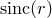
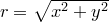

The surface plot style is similar to the colourmap and contourmap plot styles, but produces maps of the values  of functions of two variables using three-dimensional surfaces. The surface is displayed as a grid of four-sided elements, whose number may be specified using the set samples command, as in the example
of functions of two variables using three-dimensional surfaces. The surface is displayed as a grid of four-sided elements, whose number may be specified using the set samples command, as in the example
set samples grid 40x40
If data is supplied from a datafile, then it is first re-sampled onto a regular grid using one of the methods described in Section 1.12.
The example below plots a surface indicating the magnitude of the imaginary part of  :
:
set numerics complex
set xlabel "Re($z$)"
set ylabel "Im($z$)"
set zlabel "$ mathrm{Im}(mathrm{log}[z])$"
mathrm{Im}(mathrm{log}[z])$"
set key below
set size 8 square
set grid
set view -30,30
plot 3d [-10:10][-10:10] Im(log(x+i*y))
with surface col black fillcol blue
A surface plotted above a contour map.
In this example, we plot a surface showing the value of the expression |
set nokey |
The resulting image is shown below: |
The sinc( ) function represented as a surface.
) function represented as a surface.
In this example, we produce a surface showing the function  where . To produce a prettier result, we vary the colour of the surface such that the hue of the surface varies with azimuthal position, its saturation varies with radius |
set numerics complex |
The resulting image is shown below: |
 , and project below it a series of contours in the
, and project below it a series of contours in the  plane.
plane.  , and its brightness varies with height
, and its brightness varies with height  .
.